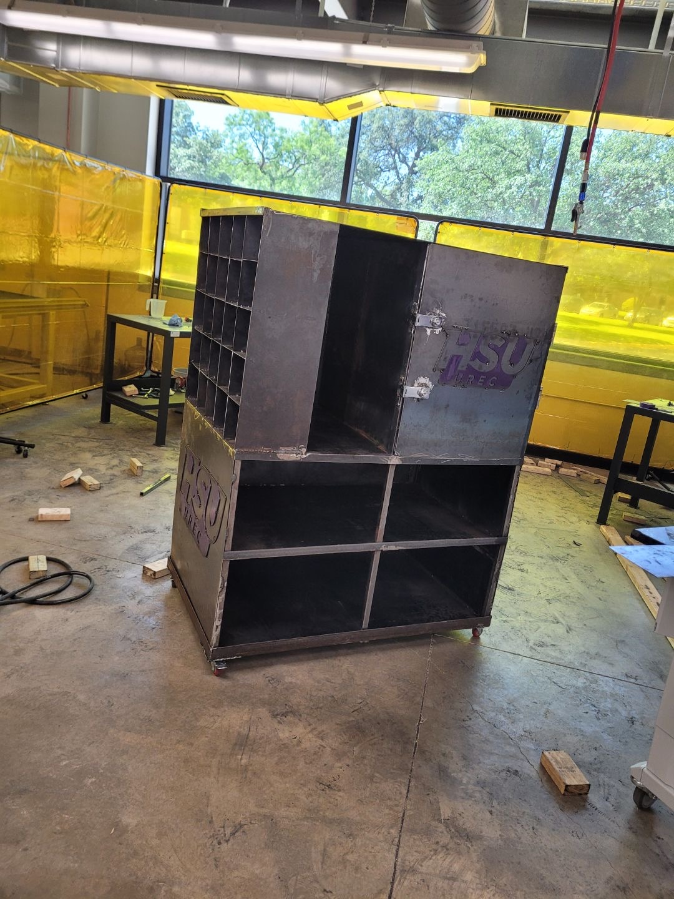
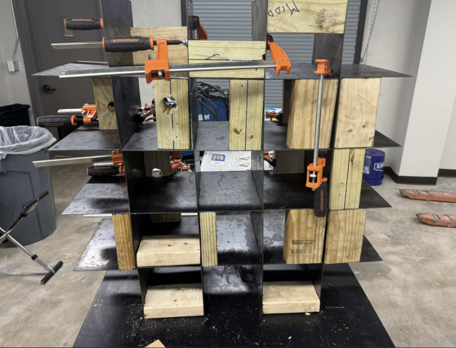

02 / HSU DESIGN & MANUFACTURING · SPRING 2025
Weight rack &
storage cabinet.
A pair of mobile equipment-storage systems designed and fabricated for the Hardin-Simmons University Recreation Center.

THE PURPOSE
What the recreation center needed
Recreation-center coordinator Mrs. Lancaster needed storage suited to the available space and class equipment. The team developed a dumbbell rack and a separate cabinet with larger storage compartments, lockable storage, and small cubbies for phones and handbags.
We needed both systems to fit the available space, hold the equipment, and be practical to move. Material cost and the tools available in our shop also affected the design.
MY CONTRIBUTION
What I worked on
- Personal-item storage
I helped build the cubbies for phones and handbags. They worked as intended when we delivered the cabinet.
- Cabinet mobility
I designed and built the caster-wheel base so the cabinet could be moved.
- Shop fabrication
I also helped with welding. The rack and cabinet were a shared team effort.


DESIGN & FABRICATION
Design and fabrication
Rack supports
We modeled the rack in Inventor and checked it with hand calculations and ANSYS. After the initial analysis showed too much deflection, we added center supports.
Caster placement
Caster placement and load distribution were part of the design evaluation. The cabinet’s base provided a practical means of moving a large storage assembly.
Welding the cabinet
The thin sheet metal warped from welding heat. We added supports during fabrication. Building a more rigid frame before attaching the sheet would have made that part of the work easier.


OUTCOME
The finished rack and cabinet
The finished rack and cabinet provided equipment and personal-item storage for the recreation center. The installed photograph shows dumbbells, mats, and blocks stored in the completed systems.
We analyzed the rack using a 2,000 lb design load. The physical check described in our report was about 500 lb, so we did not test it to the full design load.
TEAM & CREDIT
The team
Student team: Jeremiah Richard, Brandon Still, and Jorge Perales-Garcia.
Faculty: Dr. Matt Jackson. Client: Mrs. Lancaster, HSU Recreation Center.
Project documentation: “Design and Manufacturing of a Weight Rack,” May 12, 2025.